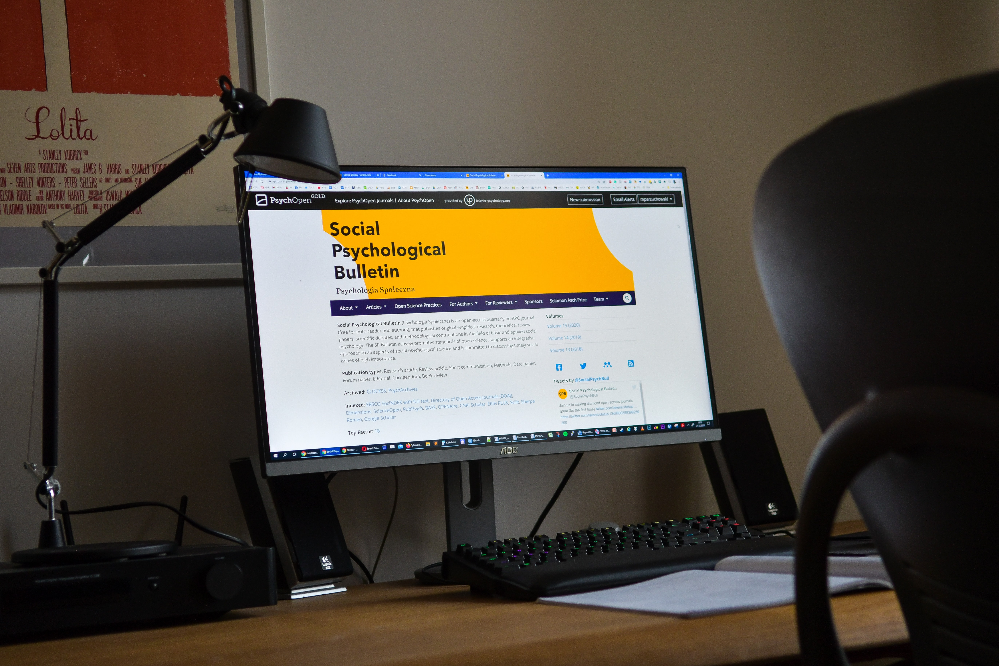

보라해바라기의 최종 목표는 심리 분야에 기여할 수 있는 웹개발자가 되는 것이다. 이를 위해선 최소 3년 이상의 경력을 쌓아야 하고 지금 그 첫 발걸음을 내딛고 있다.

또한 엘리님의 영상을 보며 자신이 되고 싶은 이상적인 개발자의 모습을 그려나간다.
보해는 현재에 충실하는 삶을 사는 것에 익숙하여 미래를 그리기 어려워한다. 미래는 보해에게 너무나 막연한 시간이기 때문이다. 하지만 꿈을 크게 잡아야 한다는 말이 있듯 보해가 자신감을 가지고 자신의 미래에 대해 자유롭게 생각해봤으면 좋겠다.